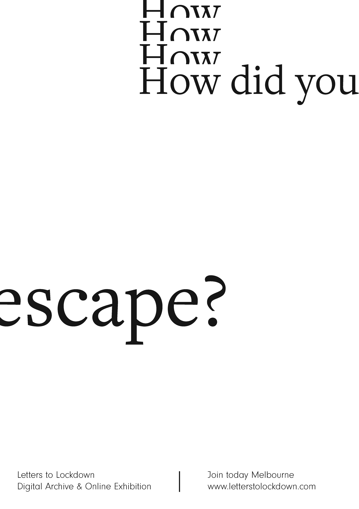
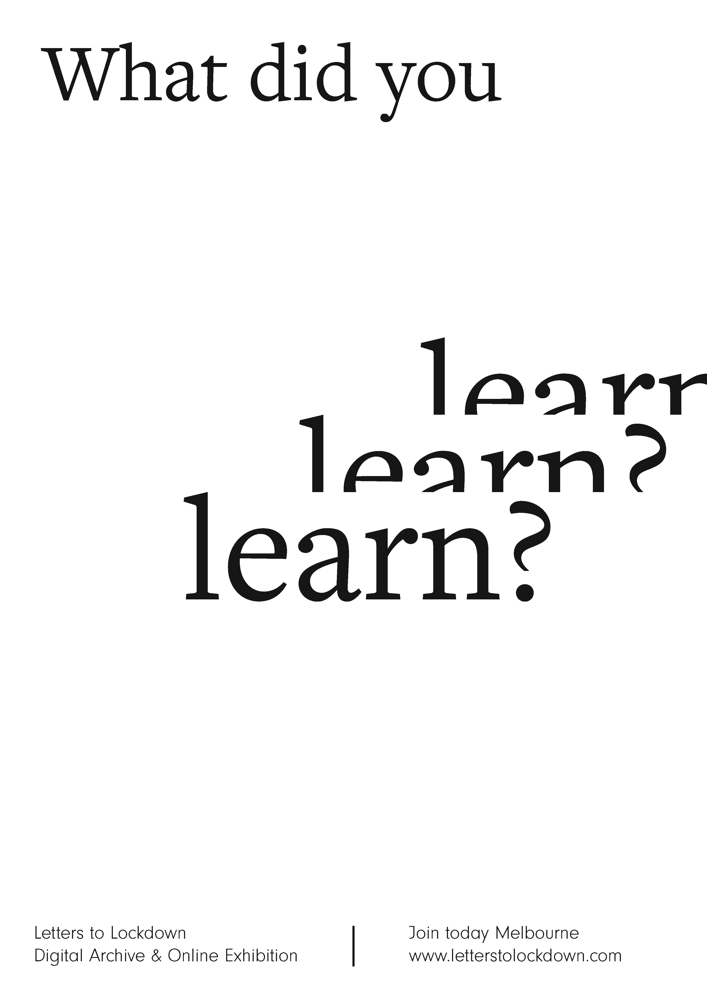
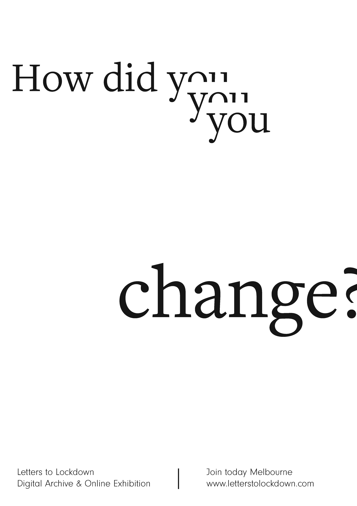

Letters to Lockdown is a online exhibition created and collated during the arduous weeks of lockdown in Melbourne, Australia in 2020. It is a collection of many small moments captured over the past few months from contributors all over greater Melbourne. The content has been categorised and dedicated to the rollercoaster of moods endured throughout the period of social isolation.
As a whole, the archive is a platform for distributing, interacting with and reflecting on the turbulent, challenging and contemplative time we’ve experienced. It’s also an open invitation for more Melbournians to contribute their thoughts and experiences.
I hope you find comfort and familiarity within the pages of this site and can use the collection as inspiration to reflect on your thoughts this year. So take your time to meander through this collection of moments.
Letters to Lockdown is an exhibition curated and published by Melbourne Design Student Georgia Lilley in October 2020.
Letters to Lockdown is ever-evolving to represent as many Melbournians as possible. If you'd like to reflect on your time in lockdown, please share your thoughts in the link below. I'd love to hear from you.
While this archive shares a contemplative and reflective perspective of the Melbourne lockdown, I acknowledge that many people faced incomprehendable hardship during this time. If you or someone you know needs to reach out and talk to someone, please consider calling one of the helplines below.
• Kids Helpline | 1800 55 1800 Counselling for young people aged 5 to 25
• Beyond Blue | 1300 22 4636 Awareness surrounding depressing and anxiety
• 1800 RESPECT | 1800 737 732 Sexual assualt and domestic violence counselling
SHARE
If you enjoyed exploring this archive, feel free to share the word and share the love by downloading the posters below. Just drag and drop them onto your desktop.
Or if you don't feel like sharing, keep them for yourself. A gift from me to you.



CONTACT
Georgia M. Lilley
Communication Design Student
MADA | Monash University